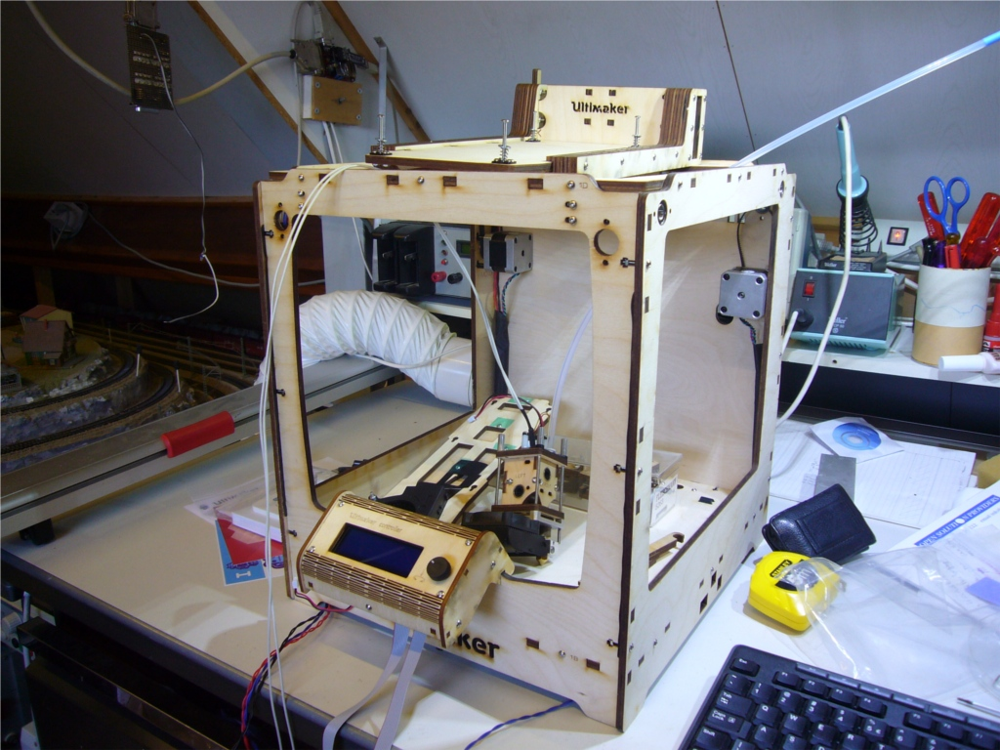
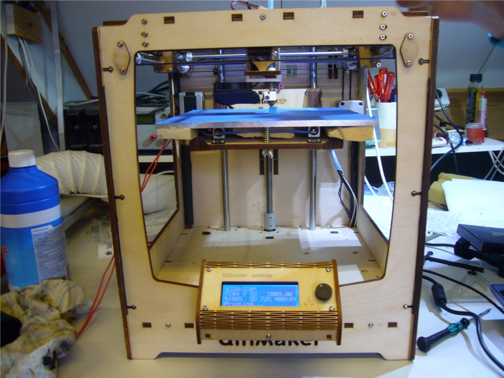
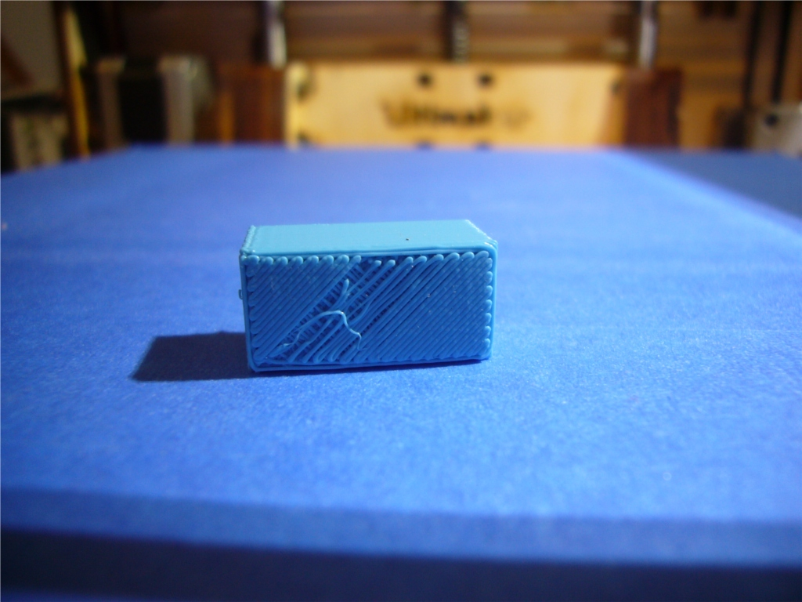
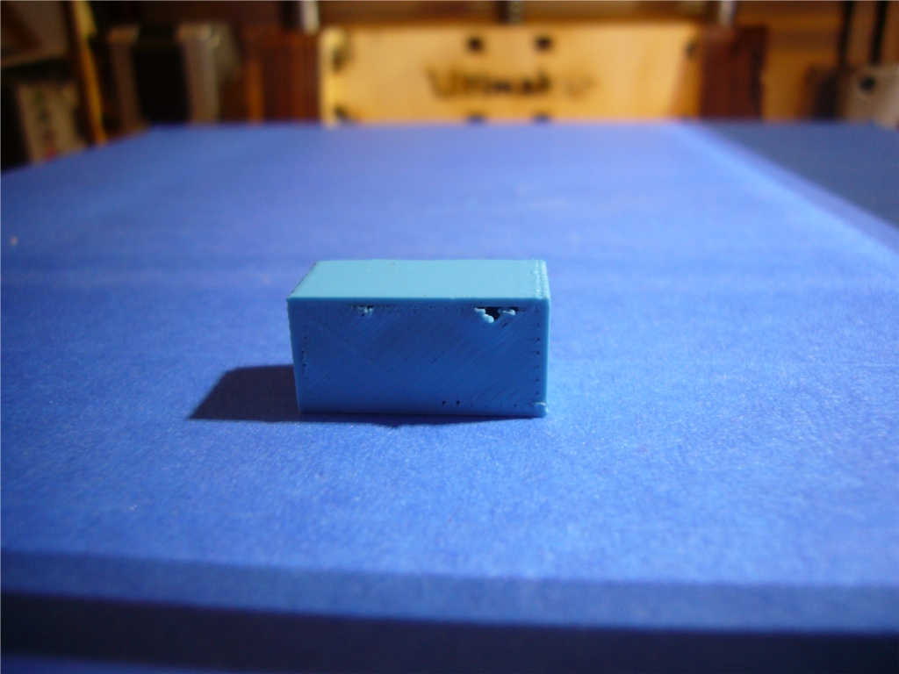
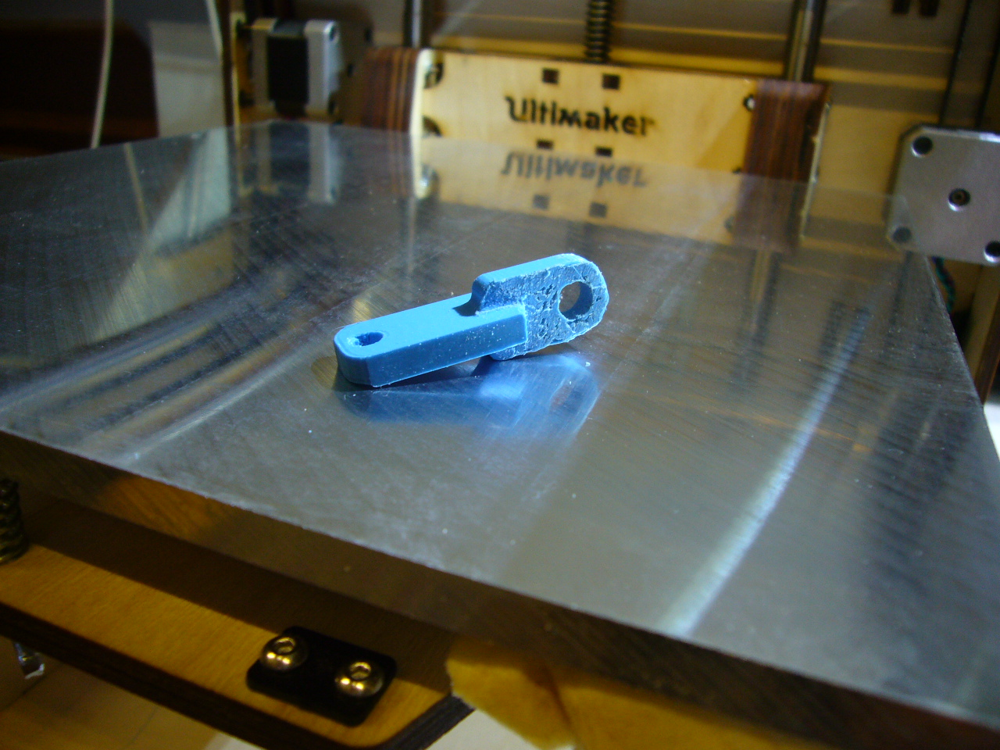
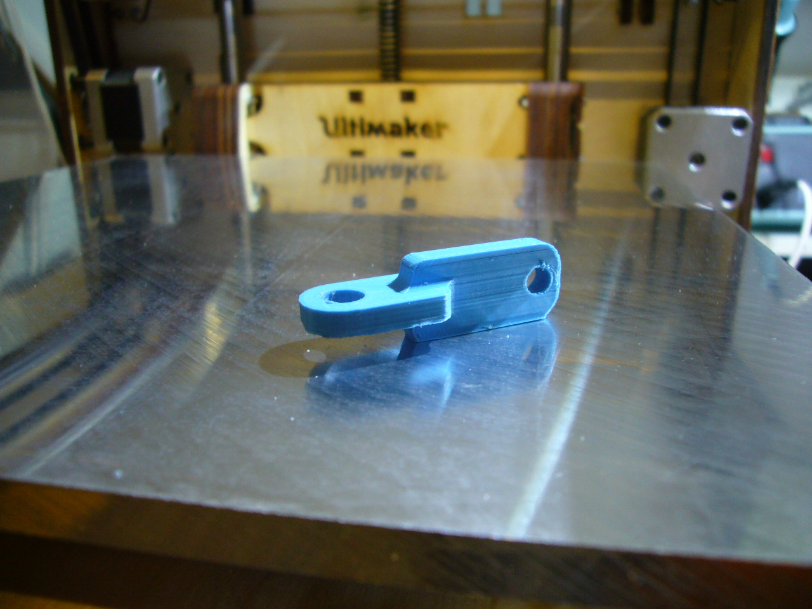

3D Printer initial build
The kit I ordered is the ultimaker original. It is a put together kit and is easy
to assemble. While assembling it I noticed that the laser cutting
went wrong on the front panel. A new front panel was send but the build was
interrupted. Actually the build wiki is quite good. Here is the intermediate
stage of building the machine while waiting for the new front panel. Frame
is finished, hotend is done and the build platform is done. Also the
ulticontroller is assembled.

Within 4 days after notifying ultimaker I received a new front panel and I
resumed building the machine.
This is the result of the finished machine without activating the heated bed.
So I am printing on the well known blue tape. You can also see that I put
some isolation under the headed bed.

It is printing the very first print ever. I am quite surprised how well it
actually works. Putting the machine together and run it. Yes there are
issues. The bottom layer was not firm on the platform that is something I
need to learn:

And the top layer was even wurse it did not fill the gaps. So 10% infill is
probably not good enough

Here some photos of a initial print that I made when I figured out how keep the parts on
the platform. It is printed in the standard blue ultimaker PLA that comes with the machine.


You can clearly see that I had to introduce some support structure that I
had to remove. So that is why one side is not so smooth. I tried to print
the part upright but it got knocked off, too little surface area to hold on